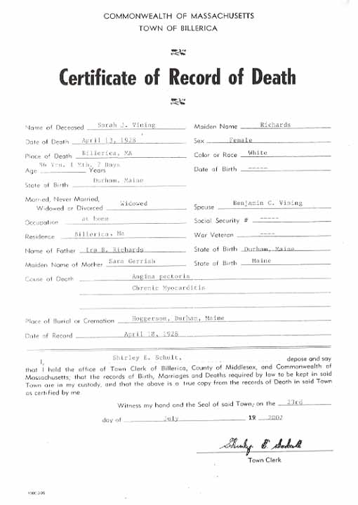
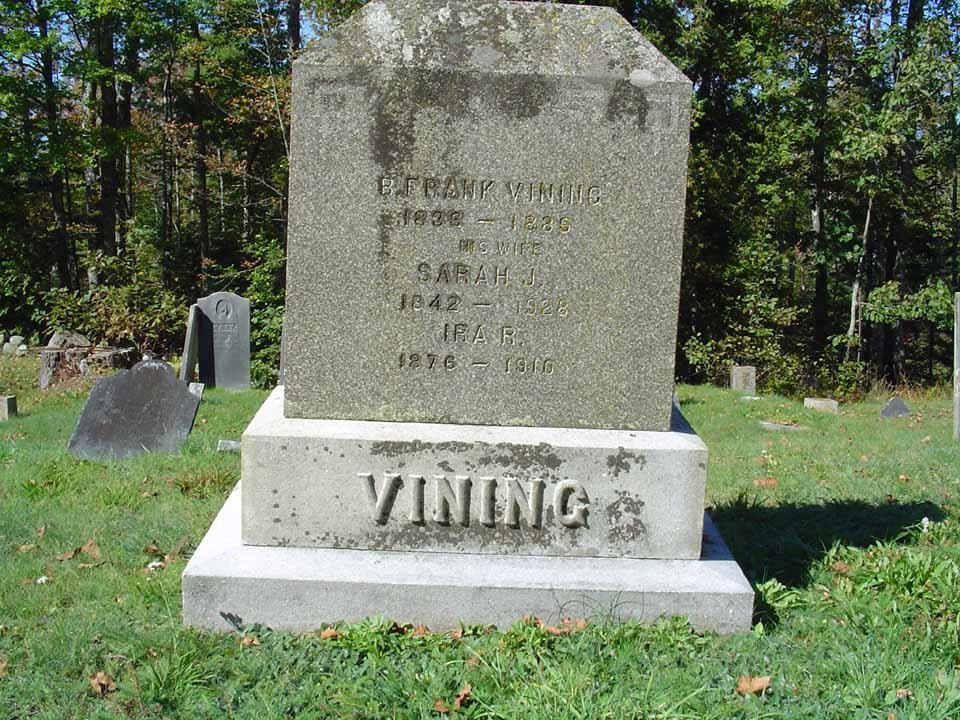

Census Data
| 1870 | 1880 | 1890 | 1900 | 1910 | 1920 | 1930 | |
| Benjamin Franklin Vining | 33 | 44 | dead | ||||
| Sarah Jane (Richards) Vining | 27 | 38 | ? | 58 | ? | 78 [see note below] |
dead |
| Eugene Conrad Vining | 5 | ? | living in separate household | ||||
| Ira R. Vining | 3 | ? | 23 | ? | dead |


Death Data
Certificate of Record of Death for Sarah Jane (Richards) Vining, wife of Benjamin Franklin Vining.

Research Opportunity:
The 1900 census reported that Sarah J. Vining was the mother of 5 children, 4 of whom were living as of the 1910 census. If this is true, who are the other 3 children?